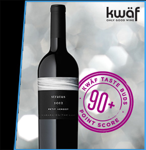
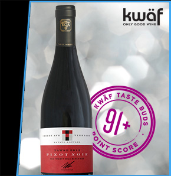

%%IGNORE%%If this email does not display properly please click here %%IGNORE%%


American Express® Cardmembers are invited to take advantage of special prerelease wine offers* from kwäf.ca, Two Sisters Vineyards, Stratus Vineyards, and Tawse Winery. Just in time for holiday gifting, Cardmembers have presale access to purchase three (3) superb red wines: the Two Sisters Vineyards 2012 Eleventh Post, the Stratus Vineyards 2012 Petit Verdot, and the Tawse 2012 Cherry Avenue Pinot Noir before they're released to the general public in February 2015.
All three wines hail from the formidable 2012 vintage, which according to Ontario's Vintners Quality Alliance, saw a long, warm growing season that nurtured incredible ripeness and depth in the grapes. The result? Magnificent, age-worthy wines fit for the most serious of wine cellars.
A favourite of American Express Cardholders, Stratus Winery is a pioneer in ultra-premium Bordeaux-style wines. This year, it marks its 10th anniversary with such highlights as being the first winery in the world to be accredited with LEED (Leadership in Energy and Environmental Design) certification as well as seeing its flagship Stratus Red served to President Barack Obama at a lunch hosted in Ottawa. Stratus Winemaker J‑L Groux, a native of France's Loire Valley, has been named Ontario Winemaker of the Year and his Stratus 2012 Petit Verdot is a remarkable wine. Rarely bottled on its own, the kwäf Taste Buds2 rated this Petit Verdot 90+ points, with sommelier Zoltan Szabo declaring: "This is a delicious red, with complex aromatics of black raspberry, black currant jam, roasted plums, bittersweet chocolate, lavender, and nutmeg. Full bodied, bold… plenty of succulent fruit here, gentle, well-integrated tannins, and a great length."


Last but not least, the Tawse 2012 Cherry Avenue Pinot Noir is practically tailor-made for a holiday roast turkey. Winner of the Canadian Wine Awards' "Winery of the Year" for three years running (2010 to 2012), Tawse is building an international reputation for its biodynamic, hand-crafted wines, garnering praise in the U.K.'s Decanter magazine this past spring. Tawse is well known for its expertise in Pinot Noir. Rating the wine 91 points, kwäf's Lindsay Groves said: "As elegant and intricate as a snowflake, this is a lean and polished Pinot that will give you plenty to contemplate (while you're toasty beside the fire on a chilly winter night)."
A favourite of American Express Cardholders, Stratus Winery is a pioneer in ultra-premium Bordeaux-style wines. This year, it marks its 10th anniversary with such highlights as being the first winery in the world to be accredited with LEED (Leadership in Energy and Environmental Design) certification as well as seeing its flagship Stratus Red served to President Barack Obama at a lunch hosted in Ottawa. Stratus Winemaker J‑L Groux, a native of France's Loire Valley, has been named Ontario Winemaker of the Year and his Stratus 2012 Petit Verdot is a remarkable wine. Rarely bottled on its own, the kwäf Taste Buds2 rated this Petit Verdot 90+ points, with sommelier Zoltan Szabo declaring: "This is a delicious red, with complex aromatics of black raspberry, black currant jam, roasted plums, bittersweet chocolate, lavender, and nutmeg. Full bodied, bold… plenty of succulent fruit here, gentle, well-integrated tannins, and a great length."
These three incredible red wines produced in small quantities are available as a prerelease offer only to American Express Cardmembers ‑ and perfect for the wine connoisseur on your holiday list.
American Express Purchase Window: Thursday, November 19, 2015 – Wednesday, December 2, 2015.
All orders include tasting notes, a custom recipe (one for each type of wine ordered), and a personalized message card (if requested). The recipe(s) will be included and shipped with the wine.
Package price for one (1) bottle: $38.00/bottle including bottle deposit, related taxes, and applicable shipping5
Package price for one (1) bottle: $49.95/bottle including bottle deposit, related taxes, and applicable shipping5
Package price for one (1) bottle: $45.00/bottle including bottle deposit, related taxes, and applicable shipping5
Twelve hundred (2400) bottles of each type of wine are available on a first‐come, first‐served basis.
Cardmembers can purchase a maximum of twelve (12) bottles of each type of wine6.
Shipping and handling for individual orders is $14.95 CAD plus related taxes. Shipping is FREE when you purchase four (4) bottles or more. Shipping premiums may apply in some rural and remote areas.
Orders placed by December 2, 2015 will be delivered by December 11, 20155.

* Purchase must be charged in full to an American Express Card issued by Amex Bank of Canada. All sales are final. No refunds. No exchanges.
1 All three (3) wines will be released to the general public in February 2016.
2 The kwäf Taste Buds consist of three independent wine experts that kwäf contracts to taste, rate, and review wines.
3 Offer only available for purchase and delivery in Ontario, Alberta, Manitoba, Nova Scotia, and British Columbia. The wine cannot be shipped outside of the province in which it was purchased.
4 Cardmembers who purchase a special package will receive an email confirmation. All package items are fulfilled by kwäf. Must be of legal age to consume alcohol in your province of residence and have a valid government issued identification. It is required that someone of the age of majority in your province with government issued photo identification be present in order to receive and sign for the package. Upon delivery, proof of age may be required in the discretion of the delivery agent, and you may be requested to show two photo IDs, one of which must be government‐issued. Please drink responsibly.
5 Wine prices are comprised of applicable liquor board pricing, an agency fee, and applicable taxes. Orders placed by December 2, 2015 will be delivered by December 11, 2015. Shipping costs for individual orders is $14.95 CAD plus related taxes and will be added to the purchase price; shipping premiums may apply in some rural and remote areas. Shipping is FREE when you purchase four (4) bottles or more of wine. Offer subject to availability, while quantities last. Cannot be exchanged, resold, or refunded. Prices are in Canadian dollars. Bottle deposit is included in the listed price. A 10¢ deposit fee has been added to the final price for orders in Alberta, British Columbia, and Manitoba. A 20¢ deposit fee has been added to the final price for orders in Ontario and Nova Scotia. kwäf does not sell or markup beverage alcohol, but rather arranges for customers to purchase it through the applicable provincial regulator together with any applicable regulatory sales tax.
6 The resale of alcohol by a private individual is strictly prohibited by law.
Fulfillment of this offer is the responsibility of kwäf.ca.
TM , ® Used under license from American Express. Copyright © : AMEX Bank of Canada, 2015.
Sent from Amex Bank of Canada, P.O. Box 3204, Station "F", Toronto, ON, M1W 3W7. You can contact us or verify with us the authenticity of this e‐mail by visiting http://www.americanexpress.ca/contactus.
Note that this e‐mail was sent to: %%EMAIL%%. If you received this e‐mail at a different address, this e‐mail message was forwarded.
If you do not wish to receive e-mails from us about products, services or offers, please click here. This e‐mail address is not monitored for other inquiries and messages received cannot be responded to.
To find out how we collect, use and safeguard your personal information, please visit http://www.americanexpress.ca/privacy.